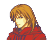

Supportルトガー⇔フィル
Support Rank C

・・・あのー...Um.
あの ルトガーさん
ちょっとUm, Rutger, could I have a moment?

・・・なにか用か...What do you need?
はい 実は
お手合わせ願いたいと思ってYes. Actually, I was hoping you'd spar with me.
いつか機会があったら
是非！If there's ever a chance, please!
・・・...
私も こう見えて
修行を積んできた剣士なんですよI may not look it, but I'm a swordswoman who's trained hard, you know.
いくつかの闘技場で
勝ち進んだことだってありますI've even won my way through a few arenas.
手加減無しでも
大丈夫ですから！You don't have to go easy on me, either!
・・・断る...I refuse.
何故ですか
私が女だからですかWhy? Is it because I'm a woman?
・・・俺の剣は
人を斬るためだけにある...My sword exists only to cut people down.
遊びの剣には興味がないI have no interest in a sword used for play.
！ 遊びだなんて！! Play, you say!
あ ちょっとまって・・・！Ah, wait a moment...!
・・・遊び半分で剣を振るっているように
思われているなんて 心外だな...Being thought of as someone who swings a sword half in jest is really hurtful.
戦っているときの
ルトガーさんの太刀筋The way you swing your blade when you fight, Rutger—
とても冴えていて 迷いがないから
学びたいと思ったのに・・・it's so sharp and free of hesitation, that's exactly why I wanted to learn from it...
Support Rank B
ルトガーさん！ いざ 勝負！Rutger! Come on, fight me!
・・・どけ...Get out of the way.
いいえNo.
私は本気だと
わかっていただきたいから退きませんI won't step aside, because I want you to understand I'm serious.
剣を抜いてください！Please draw your sword!
あれから 考えましたI've been thinking about it since then.
私も真剣に剣の道を歩んできたのですI've been walking the way of the sword seriously too.
遊びだなどと
誤解されたままは嫌ですI don't want to be misunderstood as just playing around.
私は もっと強くなりたい
あなたの技を 学ばせてくださいI want to become stronger. Please let me learn your technique.
・・・俺の剣は
人を斬るためのものだといっただろう...I told you, my sword is a thing meant for cutting people down.
はい それは聞きました
しかし・・・Yes, I heard that, but...
ここで剣を抜けば
お前を斬ることになるIf I draw my sword here, it means I'll cut you.
お前の望みは それか？Is that what you want?
！・・・!...
逆に 俺を斬る気もないのだろう？And conversely, you have no intention of cutting me down either, do you?
それは・・・そんなことはThat's... that's not...
だから
そんなものはお遊びだと言うのだThat's exactly why I call it a game.
・・・・・・......
・・・・・・......
・・・私は ただ・・・...I just...
・・・だけど
身勝手なことをしてしまったかな...But maybe I did something selfish.
今度あったら おわびしようIf I see him again, I'll apologize.
Support Rank A
ルトガーさんRutger.
あ そんなに
にらまないでくださいAh, please don't glare at me like that.
何度もおわびしたとおり
もう 勝負を挑んだりしませんからAs I've apologized many times, I won't challenge you to a duel again.
・・・・・・......
ただ 先ほどの戦いのなかでの
ルトガーさんの太刀筋 見事でしたBut still — the way you handled your blade in that battle just now was magnificent.
剣士として やはり
少し憧れていますAs a swordsman, I do admire you a little.
私も早く あんなふうに
なれるといいのですがI hope I can become like that too, someday soon.
・・・おまえは おまえだ...You are you.
え？Eh?
俺の剣は血にまみれている
そんなものに 道を見る必要はないMy sword is drenched in blood. There's no need to see a path in something like that.
・・・・・・......
私は ある人から
こう教えられましたI was taught this by someone once:
「剣の道の
行き着く先は 一つだ」と"The way of the sword leads to only one destination."
まだ私には 本当に
そうなのかどうかはわかりませんがI still don't know if that's really true, but...
ただ 思うのはI just think—
ルトガーさんの剣は
やはり剣の道の上にあるものだと思いますI think your sword really is still on that same path, Rutger.
私が 学ぶべきことは
たくさんありますThere's so much I should learn from you.
・・・どうおもうかは
お前の勝手だ...Think whatever you like.